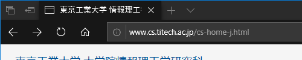

情報リテラシ第一 第7回
2020年6月15日 (月) 1-2限
- 前回までのあらすじ
- 情報セキュリティ
- 情報リテラシ
- 本日のまとめ・小課題
- クラス共通課題3の説明
- 情報リテラシ第二の予告
雑談:
- 次の日本語を英訳せよ:
- どうぶつの森 … Animal Crossing
- たぬきち … Tom Nook
- マリオ … Mario
- クッパ … Bowser
- (ポケモンの) サトシ … Ash
- カビゴン … Snorlax
- スーパーサイヤ人 … Super Sayan
- 成歩堂龍一 … Phoenix Wright
- 次の英語を和訳せよ:
"Buffalo buffalo Buffalo buffalo buffalo buffalo Buffalo buffalo."
- お詫び: "anti-" の発音は「あんてぃ」もアリだった。(おもに UK 英語)
証拠: YouTube動画を使ってネイティブ英語の発音を確認できるサイト。
連絡事項
0. 前回までのあらすじ
- コンピュータ上のデータは、すべて 0 と 1 で表される。
- データ圧縮技術のおかげで、通信料金が節約できる。
- インターネットはややこしい。
- IPアドレスとは何か?
- 次のうちもっとも多く通信料を使うサイトはどれか:
Twitter、YouTube、Wikipedia、Instagram
- 「サーバ」と「クライアント」の違いを説明せよ。
1. 情報セキュリティ
- セーフティ (safety) … 安全。災害や事故から守ること。
- セキュリティ (security) … 保安。悪い人間から守ること。
おまけ: アホな錠前
1.1. 情報セキュリティとは
以下の 3つのものを守るのが情報セキュリティである。
- 秘匿性 (秘密を守れる) … 知られたくないことを知られたら ×。
- 正真性 (内容が正しい) … 勝手にデータを改竄・なりすまされたら ×。
- 可用性 (必要なときに使える) … いざ必要なときに動かなかったら ×。
安全対策・セキュリティ対策の種類
- 予防 (抑制) … 事件・事故が起こる原因そのものを減らす。
- 防止 (保護) … 事件・事故を起こりにくくする。
- 封じ込め (緩和) … 万が一、事件・事故が起きた後のダメージを少なくする。
- 火事の場合 …
- 予防 … 火をなるべく使わない。
- 防止 … 燃えにくい素材を使う。
- 封じ込め … 消火器を用意する。避難訓練をする。
- 自動車事故の場合 …
- 予防 … なるべく車に乗らない。安全運転を心がける。
- 防止 … 頑丈なクルマに乗る。
- 緩和 … エアバッグ等の装備。保険をかける。
- 財布の盗難の場合 …
- 予防 … 貴重品はなるべく持ち歩かない。
- 防止 … 出しにくい所に入れる。
- 緩和 … 現金を小分けにして複数箇所に入れておく。
- コロナウイルス感染症について、
予防・防止・封じ込めの手段を答えよ。
- パスワード漏洩について、
予防・防止・封じ込めの手段を答えよ。
1.2. セキュリティが破られるとき
- コンピュータが悪い場合:
- 機械の停電・故障・ケーブル切断。
- ソフトウェアの欠陥 (バグ)。
- 人間が悪い場合:
- パスワードを推測される。
- まちがった操作をする。
- 特に、あやしいプログラムを実行してしまう。
- プログラムは、ある処理が人間にとって害があるかどうかは判断できない。
- 自分のデータを勝手に消されてしまう、どこかに送信されてしまう、etc.
完璧な世界では...
- もし完璧な (= 欠陥のまったくない) ソフトウェアができれば、
それを悪用されてハッキングされることはない。
- 「完璧なソフトウェア」
=「どんな物理法則の宇宙でも完璧に動くロケットを設計せよ」
- 実際には、機械が完璧でも人間はつねに騙される。
1.3. 人間にできること
- 間違い: 「自分なんて誰からも狙われないだろう」
- 犯罪者の考えることはみな同じ。
「自分では直接手を出さない → 他人に罪をかぶせる」
- 自分のパスワード・銀行口座等を人に使わせると、
なりすましの温床になる。
- 犯罪に使われる、コードを盗まれる、「いいね」を売る
(ハックされたPCの価値).
- 対策: パスワードはきちんとつける。
- ウイルスの 99% は既知の欠陥 (バグ) を悪用したもの。
- 世の中、信頼できない情報が多い。
- 記事の作者は信用できるか?
- メールの差出人は信用できるか?
- ウェブページのサーバは信用できるか?
- 対策: 鍵マークを確認する。(とくに支払いや暗証番号を送る場合)
| 暗号化なし |
 |
| 暗号化あり |
 |
暗号化 + 実世界との対応
(第三者機関によって正しいと証明されている) |
 |
1.4. 暗号 = 安全とは限らない
- サーバの名前がそれっぽいからといって信用してはダメ!
- 悪人でも暗号は使える。(中間者攻撃)
- 「本当に正しい相手と通信している」ことを
どうやったら証明できるのか?
→ 第三者機関に証明してもらう。
- では第三者機関はどうやって信頼するのか???
→ じつは最初から特定の機関を信頼するように機械が作られている。
自宅に警察から「落とし物が届けられたので取りに来てほしい」という連絡があった。
これが本当に警察からの電話で、詐欺でないことを確認するにはどうすればよいか?
おまけ:
詐欺と疑われた例
1.5. 企業 = 安全とは限らない
- 自分がネットを見るとき、自分もまた
ネットから見られている。
- なぜ Google・Facebook・Twitter はタダなのか? …
広告を売っているため。
- Googleの本当の客は我々ではなく、広告主である。
Google検索のユーザは、利用するための「動物」のようなもの。
- 広告の原理: 対象を絞り込むほど価値があがる。
- たとえ自分の携帯電話に年齢・性別・職業・趣味・友達一覧を
入力していなくても、Google にはほぼすべて知られている。
- 検索キーワードから漏れる情報:
年齢、性別、家族構成、地域、収入、趣味、etc.
- 位置情報を見れば、どんな生活をしているかがわかるし (会社員・学生)、
誰と一緒にいるかもわかる。
- 起きた時刻・電話した時刻・ゲームをやった時刻などを見れば、
一日の生活リズムがわかる。
- 写真に映っている景色からも位置が推測できる。
- マウスの動き・スクロールを検出し、ページのどの部分を熱心に見ているかがわかる。
- Facebook幹部が語った話 …
「10〜20代の若者が不安になったり、感動したり、嫉妬したり、劣等感をもつ瞬間を検出できる」
- そのタイミングで趣味に合った広告を出せば売れる。
- Google や Facebook が得た情報は、別の会社にも利用されている。
その会社が何をしているか、Google や Facebook は責任を持たなくてよい。
- これらのデータの一部は警察に提供されたり、
2016年の米国大統領選に影響を与えている。
- Amazon の場合 … 買う品物で住所・性別・職業・趣味、
妊娠しているか否かなどがわかる。
- Amazon Echo と Google Home … 家での会話を録音している。
その一部は、数千人のスタッフによって聞かれている。
- これらのデバイスには過去にいくつもの欠陥 (バグ) が発見されており、
ハックされれば悪意のある目的に使われる危険がある。
- Pokémon Go … 「人間を遠隔操作する実験」。
- すべての監視・盗聴処理は、可能なかぎり人間に気づかれないように作られている。
- 監視されないようにネットワークに接続しないようにしたら? → 作動しなくなる。
- 機械はなるべくタダで売る → 本当の価値はデータである。
1.6. セキュリティ - まとめ
- パスワードはきちんとつける。
- つねに最新のバージョン (=バグが少ない) に更新する。
- 信頼できない情報に注意する。
雑談 その2
プロモーションビデオは、音楽が非常に重要:
2. 情報リテラシ
2.1. 結局、情報リテラシとは何だったのか?
- 「パソコンが使えること」ではない。
- 「情報」を正しく使えること:
- 情報がどのように処理されるかを知っている。
- 欲しい情報を検索・入手できる。
- ウソを見抜く。
2.2. 作られた真実
2.3. マスコミは「中立」か?
データも間違える
陰謀論
マスコミが信用できないからといって、ネットの言うことを全部信用すると…
また、ネットの記事はあとからこっそり
改竄されたり削除されたりするので注意。
Wikipedia 編集合戦
- 「ジョージ・フロイドの死」なのか
- 「ジョージ・フロイドの殺害」なのか?
- 2003年のイラク戦争を
「アメリカのイラク侵略」と呼ぶか
「アメリカのイラク解放」と呼ぶか?
2.4. 科学的議論 vs. 感情論
- 科学的議論: 事実や統計をもとに議論する。
- 感情論: 恐怖あるいは怒りに訴える極端な事例のみを取り上げる。
- 注意:
「科学的議論 = つねに正しい」「感情論 = つねに間違っている」とは限らない。
マスコミもしょせんは商売である
科学的な議論は凡庸であり、退屈だ。
マスコミが儲けるためには、人が読みたがる記事を書く必要がある:
- 不安を煽るような記事 (災害、犯罪、病気、戦争)
- 怒りを煽るような記事 (政治家、芸能人の不祥事)
- 羨望を煽るような記事 (金持ち、芸能人、東大生)
- スポーツ関連、趣味関連、ほっこり系 (動物ネタ)、他。
次の新聞記事のうち、不安または怒りに訴えているものを挙げよ:
- 自粛が続く中でパチンコ店がいまだに営業
- ネットの中傷が原因でアイドルが自殺
- 内閣支持率が過去最低に
- 北朝鮮が核兵器の開発を加速
- 千葉県で震度4
2.7. 結局、どうすればいいのか?
- 100% 正しい情報なんてありえない - 「半分ぐらい信じる」
- 複数の情報源にあたる。
- 異なる立場から物事を見てみる。
- 自分の経験と合致するかどうか確かめる。
- 情報リテラシ =
ほどほどに疑ってかかること。
インチキな議論 (詭弁) の例
- 権威に訴える議論 (「有名なあの人が言ってるから正しい」)
- 十把ひとからげ (「バカな東工大生がいた」 → 「東工大生はみなバカである」)
- 藁人形論法 (「A氏は東工大が世界最悪の大学だといっているが…」)
- ニセの二者択一 (「Aを否定するなら、つまりBということか!」)
- 相関と因果関係 (「アイスを食べる人が増えると、エアコンが売れる」)
- そっちこそどうなんだ論法 (「もっとひどいことをやってる人がいる」)
外国人の視点で日本を見てみる
すべての報道には真実と、そうでない話が混じっている。
日本に対する批判はすべて「嘘」あるいは「誇張」で、海外の陰謀だと思いこむのは
科学的な態度だろうか?
3. 本日のまとめ・小課題
大学入学おめでとうございます。
- なぜ学校なんかに行くのか?
- 高校 - 怒られたくないのでやる。
- 大学 - やりたいからやる。
- 大学のほうからは何もしてくれない。
- 自分で考えて結論を出さなければいけない。
- 先生 = 道具である。
役に立つかどうかは使い方次第。
産経新聞の 2018年の記事
「訪日外国人のレンタカー死傷事故、３年で３倍に」
を見ると、訪日外国人による自動車事故が大きな問題となっているように読める。
しかし、この記事には訪日外国人がここ最近で急速に増えているという事実が記されていない。
過去5年間 (2013年〜2018年) の訪日外国人の数をネットで調べ、
この記事のいう問題が本当に「問題」なのかどうか考察せよ。
また、記事中のグラフの描き方についても問題点を指摘せよ。
回答は Quiz 5 に提出せよ。
締め切り: 6月22日 (1週間後)
4. クラス共通課題3の説明
クラス共通課題は、全クラス共通の (やや大変な?) 課題です。
5. 情報リテラシ第二の予告
6月22日(来週月曜日)より開始。
- パソコンが必要です。 (Windows あるいは Mac)
- パソコン上におけるデータ処理の方法。
- 数式・グラフを使ったレポートの書き方。
- プレゼン作法。 (バイトの面接に有利かも)
- プログラミングはやりません。
(コンピュータサイエンス第一を履修のこと)
- …その他、雑学や新山の体験談など。
みなさんに調べてもらった、Wikipedia における真偽のあやしい情報 (提出順)
(一部簡略化しています)
- 湊あくあ …
直近二か月のホラーゲーム動画は上記の通り、「罰ゲーム」としてホラーゲームをやっていないものの方が多いように見えるので、「罰ゲームとしての配信が多い」という部分は偽だと思いました。
- 東京工業大学 …
「出典が明記されていない情報」:「工大祭 大岡山キャンパスで行われる学園祭。工大祭実行委員会 (JIZI) が主導し、各サークルの催し物や模擬店が並ぶ。毎年10月に行われ、"同時にオープンキャンパスも開かれる。"」 ...今年のオープンキャンパスは11/8に開催の予定である。
- 渋谷幕張中高校 …
大学進学実績の”2020年は東京大学に74名の合格者、京都大学に13名の合格者を出した。”という部分のソースがない。
- 高知県日高村 …
日高村という名前は「日本」と「高知県」から一文字ずつ取ったことに由来するという内容です。これには出典が明記されていませんでした。そこで、副村長に尋ねたところ、村誌に掲載されていました。
- WHO …
活動内容についての記述に、出典が明記されておらず、外務省のWHOのページを確認したところ、「災害時の緊急対策」は主要活動に書かれていませんでした。
- シノビガミ …
書誌情報の欄に書かれてない書誌が存在する。それは、シノビガミ公式ウェブサイトにおいて確認できる。
- 農業 …
目次12の農業生産額のデータの出典が明記されていない。
- 筑波大学附属中学校・高等学校 …
「施設は主に高校校舎・中学校舎、体育館、運動場・コート面、プール、武道館などからなる。」(Wikipedia)とある。...正しくは、「施設は主に高校校舎・中学校舎、体育館、運動場・コート面、プール、武道館、桐陰会館などからなる。」である。
- ラーメン二郎 …
社訓がのせてあるが、その出典元が消えていた。出典はラーメン二郎三田本店に掲示してあり、画像もネットに上がっている。
- ビッグバン …
3.「概観」の最初の文章に「Ia型超新星を用いた宇宙膨張速度の測定」とあるが、これについての出典が示されていない。その出典はノーベル賞受賞のきっかけとなった「https://iopscience.iop.org/article/10.1086/307221」の論文であると思われる。
- 南山中学校・高等学校 …
「概要」の項に、「また、もうひとつの大きな特徴として、男子部及び女子部に分かれて教育を行う『男女併学』を採用している。」とありましたが、...Wikipediaの執筆者は南山の教育体制を誤解しているか、男女併学という言葉の意味を取り違えていると考えられ、どちらにせよ上記の記載は誤りであると言えます。
- 茨城県立土浦第一高等学校 …
「冬季には、希望者のみの３泊４日のスキー旅行がある」。土浦一校の公式ホームページには、行事予定の欄に令和2年のスキー教室は12月23,24，25日の2泊3日と記載されている。
- 野球 …
用具-ボールの部分にある2006年以降の公認軟式球の写真が貼ってありA球の画像であるが平成31年度からM球に変更されており間違い。軟式野球連盟のホームページのルールブックに書いてある。
- 桐朋中学校・高等学校 …
沿革の中で「1941年3月-財団法人第一山水中学校設立。」とあるが、公式のホームページでは「財団法人山水育英会を母体として第一山水中学校を設立する。」とあり間違っているとわかる。また校歌が制定された年も同サイトのものと一年ずれていて間違っていた。
- 水俣病 …
出典が明記されていない情報:「1962年：水俣病審査会、脳性小児マヒ患者16人を胎児性水俣病と認定。」(上記wikipediaから引用) 出典:水俣市立水俣病資料館HP内のQ＆Aの「2.水俣病患者について」 新聞記事見出しによる水俣病関係年表1956-1971
- 東京都立両国高等学校・附属中学校 …
基礎データ・アクセスの欄にて、出典が明記されていなく真偽が疑わしい内容について調べた。Wikipediaでは、学校までのアクセス方法としてJR総武線・東京メトロ半蔵門線錦糸町駅から徒歩10分、都営新宿線住吉駅から徒歩14分と書かれている。しかし、東京都立両国高等学校のホームページでは...と書かれており、明らかにウィキペディアの情報は間違っている。
- 東京大学の入試問題 …
理科三類の面接試験の実施についての記述が間違っている。（「近年の選抜方法」の項目）（2008年から理科三類の面接が廃止されたままになっている）2018年からは理科三類の面接試験を再開している。
- Apex Legends …
この記事のゲーム内容の出典がない。ここでアイテムについて書かれた部分で注射器を回復アイテムの総称のように使っているが、注射器は回復アイテムの一種に過ぎず、他に医療キット、フェニックスキットという回復アイテムが存在する。
- サレジオ学院中学校・高等学校 …
交通の欄において、「横浜市営地下鉄グリーンライン北山田駅から徒歩７分」と書かれていたが、これは出典が明記されていない。サレジオ学院中学校・高等学校のホームページを検索して、交通アクセスのサイトを見てみると、地図に「横浜市営地下鉄グリーンライン北山田駅より徒歩５分」との記載があった。よって誤りであることが証明された。
- 千葉県立千葉中学校・高等学校 …
高校の教育方針に「重厚な教養主義」とあるが、出典が明記されていない。千葉県立千葉高等学校のホームページの「1校1キラ」で「重厚な教養主義」と記載されていることが確認できた。
- 神奈川県立相模原中等教育学校 …
のページの入試の欄の倍率のところに出典が明記されていない。出典は神奈川県教育委員会の平成31年度神奈川県立中等教育学校の入学者の募集に係る志願者数集計結果 これより古い記録の出典は見つからなかった。
- 脳 …
「約300億個の神経細胞を含む」という記述があるが、これは間違っている可能性が高い。理化学研究所のホームページには「ヒトの大脳で約160億個、小脳で約690億個、脳全体では約860億個にのぼります。」という記事がある。
- イオン新浦安店 …
最近改装され、2階にあった島村楽器が3階に移るなどしているため、このページに書かれている情報には間違いがある。
- サッカーの起源 …
真偽がはっきりしない情報: 15世紀イタリアでも、イングランドのフットボールに良く似た「カルチョ」(Calcio) という遊びが存在した。この遊びがイングランドやフランスと決定的に異なる点は、農村地帯の広い空間でなく、都市の限られた空間である広場で行われていたことである。正しい情報: 8世紀以前のイタリアには、宮廷の門でボールを蹴りあい金を賭ける遊びがあった。「カルチョ」と呼ばれ、数名の男が球を蹴り合い格闘技の要素もあった。
- 東京都立武蔵高等学校・附属中学校 …
音楽祭について、「本番は所沢市民文化センター ミューズの大ホールを利用して行われる。」と、書かれてあるが、それは誤った情報かつ出典も明記されていない。去年は府中の森芸術劇場どりーむホールで行われた。
- 広島学院 …
「2006年度から2008年度の入試では、合格者の内入学辞退者が増加し、補欠合格が導入されていた。」とあるが、その後も補欠合格の制度は導入されている。
- チュートリアル …
コンビ名の由来は、2人が高校・浪人生時代に通っていた河合塾での「チュートリアル」（週1回行われる、連絡や模試の結果の返却などのホームルーム的な時間）から。
- 愛知県立明和高等学校 …
名鉄瀬戸線東大手駅から徒歩30秒
- ジョージ・フロイドの死 …
4.1(記念碑、抗議、暴動)にある「強奪はセントポール、ミッドウェイのCVC Pharmacy、Discount Tireアウトレット、Walgreensストアで起きた[要出典]。」という情報で、出典が明記されていないことに加えて、強奪があった店の店名が間違っている。
- ショット(バスケットボール) …
3.4.1ダンクショットの種類に「現在ではロサンゼルス・クリッパーズのクリス・ポールとブレイク・グリフィンが息のあったアリウープをよく見せている。」との記載があるが、2020年6月4日現在クリス・ポールはオクラホマシティ・サンダーに所属しており、ブレイク・グリフィンはデトロイト・ピストンズに所属している。
- 自分の母校の進学実績がWikipediaにのっていないが出典が明記されておらず真偽が定まらないので調べました。
- ヨビノリたくみ …
2017年4月に理系大学生向けにYouTubeチャンネル「予備校のノリで学ぶ大学の数学・物理」（通称「ヨビノリ」）を創設。という記載があるが、チャンネルを創設したのは2017年7月2日
- ネギ …
出典が明記されていない情報はページの始めのほうの「日本の古名では「冬葱」「比止毛之」「祢木」とされ、「き（紀）」ともいう。別名の「ひともじぐさ」は「き」の一文字で表されるからとも、枝分れした形が「人」の字に似ているからとも言う。」という部分である。
- 埼玉県立浦和高等学校 …
「現役での進路実現のため、3年間のプログラムを構築して指導。」とある。実際に進学実績をみると現役での合格者数は少なく、「浪人率 浦和高校」とgoogleで調べると「浪人率は7割です」と出る。また、学校行事をみると明らかにWikipedia上の情報とは矛盾する量の行事があり、週3〜4回の体育の授業があることからもこの情報は真とは言い難い。
- 乃木坂46えいご …
2018年5月19日のゲスト「新内眞衣、松村沙友里、桜井玲香」の部分に出典がなかった。そこで当番組のサイトを調べたところ、ゲストの欄に「桜井玲香、新内眞衣、松村沙友理」とあり、名前の間違えを発見した。
- 睡眠 …
昼寝の項目で30分以上睡眠をとると、多くの人が深睡眠に入り寝起きが悪くなるとあるが出典がない。この情報はNBCニュースでOexman教授(Sleep to Live Instituteに属している博士)がした発言からきているようである。
- 櫻井治男 …
出典：皇學院大学ホームページ研究者詳細 日本宗教学会ホームページ役員一覧 国際宗教研究所ホームページ役員 誤った情報: 日本宗教学会常務理事→正しい情報 平成7年11月〜令和元年9月にかけて日本宗教学会理事。現在は評議員。誤った情報: 国際宗教研究所理事→正しい情報 国際宗教研究所顧問
- 富山大学人間発達科学部附属中学校 …
部活動の節。出典 部活動 富山大学人間発達科学部附属中学校
- テラスモール湘南 …
フロアは各階ごとに個別のコンセプトを持つ。... 以下、公式サイトから抜粋 ...結果は、1〜3階の情報は出典不足、4階の情報は間違いでした。
- センター試験 …
令和２年センター試験の追試会場の記載がなかった。別添２：追・再試験の受験状況.pdf によると、1日目は東京芸術大学、大阪大学。2日目は東京芸術大学、北海道大学、筑波大学、大阪大学です。
- 星の王子さま …
解釈、解説に書かれた内藤濯の解釈内容について出典が明記されていない。内藤濯『星の王子とわたし』文藝春秋 2000年(星めぐり(一)、星めぐり(三)、晩年と死)
- 県立千葉高校 …
教育課程の総合的な学習の時間の項目について、「…4つの分野（人文科学・社会科学・自然科学・芸術）に分かれて発表会が行われ…」と記載されているが、実際にはこの分野分けは古いもので、今では芸術は芸術だけでなく、スポーツ・芸術分野としてまとめられている。この出典は県千葉のホームページの本校の教育活動の項目の千葉高ノーベル賞のページから確認できる。
- 目玉焼き …
目玉焼きに何をかけて食べるかという調査があまりにも曖昧であった。醤油が５４パーセントのもあれば３５パーセントのものもある。実際前者がウィキペディアだが、後者は目玉焼きに何をかけるかで検索をかけ、一番初めにヒットしたbuzz plus newsによるものである。
- 東京工業大学 …
「東京工業大学は日本の国立大学である」とあるが出典がない。「e-Gov」から国立大学法人法（平成十五年法律第百十二号）第一章第一節第二条第二項と別表第一の第二欄から確かに東京工業大学は日本の国立大学である。
- 小説家になろう …
小説の投稿ジャンルは偏っており、異世界舞台のハイファンタジーが全体の約10%を占めている。この部分には、[要検証 – ノート]がつけられていたので、これについて検証する。2020/6/7現在、737821作品が投稿されているようだ。...「異世界 ハイファンタジー」と検索すると、59505件(8.06%)が異世界ファンタジーであることがわかる。ただ、これらの中にはトレンドを分析したエッセイで、その文章の中に異世界・ハイファンタジーが含まれている可能性がある。それらを除かなければ、正確な数値とは言えないと思う。
- 間々田八幡宮 …
見出し「歴史」の部分の出典が明記されていない。出典 間々田八幡宮 祭神・由緒
- 千葉県 …
間違っている情報：訪日観光客数第1位、証明できる情報：観光庁「訪日外国人消費動向調査」「参考」都道府県別集計
- 水瀬いのり …
2020年3月放送開始のテレビアニメ「ちはやふる３」で田丸翠役として出演されることに関するソースがありません。オフィシャルサイトに出演が明記されていました。
- 高橋義孝 …
経歴・人物のところに「東京帝国大学独文科卒業」と書いてあるが、出典がない。僕が持っている フランツ・カフカ『変身』高橋義孝訳（新潮文庫） という本のカバーに彼が東大独文学科卒であると書いてある。
- King Gnu …
「受賞歴」の項目、「MTV VMAJ 2019-最優秀邦楽新人アーティストビデオ賞」の出展がこの賞のWikipediaのページしかなかったので、公式ホームページを調べた。King Gnuが受賞したとの記載があったので、正しい情報だった。
- 豆腐 …
出典の明記されていない情報 泉鏡花が「豆腐」を「豆府」と書いた。出典 青空文庫より 泉鏡花「湯どうふ」
- 水戸ホーリーホック …
新日本プロレスとのコラボレーション（出典なし） 出典：新日本プロレス公式ウェブサイトの記事
- 中動態 …
説明にある「動作が主語へ向けて行われる中動態」という文言、國分功一郎先生の著書「中動態の世界」より、中動態とは動作が主語の中で完遂するものである。
- 中動態 …
本文では古代ギリシャ語の態を能動態、中動態、受動態の3つに分類しているが、実際は能動態と中動態の対比と能動態と受動態の対比が混在していたので、3つを等しい要素として分類することはできない。このことの根拠としているのは、立志プロジェクトでの國分功一郎先生の講義の資料である。
- 森鴎外 …
出典が明記されていない情報：鷗外は脚気の原因についての確たる理論や信念を持っておらず、門外漢であるがゆえに、当時の学術的権威の説（これが間違っていたのだが）を採用したのではないかと思われる。出典：高木兼寛と森林太郎の医学研究のパラダイムについて 松田誠 CiNii論文 慈恵医大誌 2003;118:507-21. p.6 22行目〜29行目
- 埼玉県立所沢北高等学校 …
出典が明記されていないもの ２．概要のの「現在、本校の卒業生は1万人を超える。』の部分。
- 富士見市 …
出典が明記されていない情報: インパルス板倉俊之がPR大使を務めていること
- むさし野緑地公園 …
雑木林を活かした小さな公園だが、園内には自治体で初の常設のミニ鉄道（1980年2月24日「開通」）があり、4月-12月までの第2・第4日曜日に「富士見市ミニ鉄道クラブ」による無料の運転会がある」とあるが、出典の閲覧日が2017年と古い。出典は2020年の5月26日に更新されており、「毎年4月から12月（8月を除く）の間ミニ鉄道の運転会が行われています。」となっている。
- Minecraft …
出典なし: 音楽はドイツの音楽家、C418（ダニエル・ローゼンフェルド）が担当。...出典: https://c418.orgにある、If you wanna find out about the work I did for Minecraft, check out the following two albums. という文章
- 大福 …
なんじゃこら大福 - つぶあんの中に栗、イチゴ、クリームチーズが入った大福。宮崎市の和菓子屋「お菓子の日高」で販売されている。
- 地球 …
この記事の「核」というタブにおいて、「外核は鉄とニッケルが主成分であると推定されているが、水素や炭素などの軽元素を10%以上含んでいるとしなければ、地震波速度と密度の説明ができない。」とあるが、東工大の発表であるから、10%ではなく8%であるとわかる。
- 高蔵寺駅 …
「駅構内には本屋がある。」との記載があるが、本屋は既に閉店してなくなっている。私の目で見た事実であるが、「本屋サイトhonyaa!]や「号外NET春日井」にも閉店の記載がある。
Yusuke Shinyama